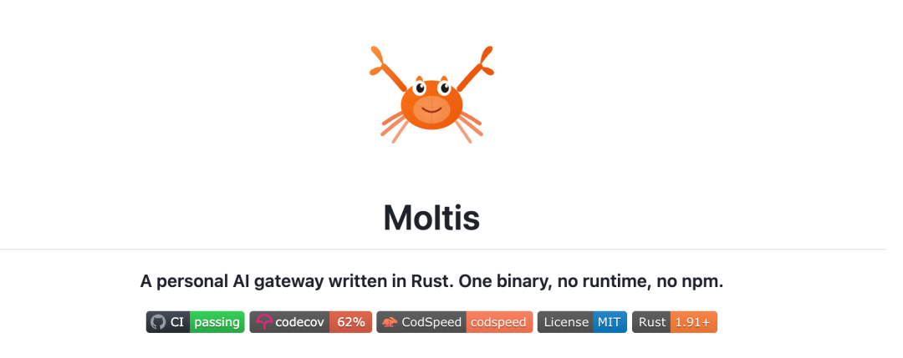
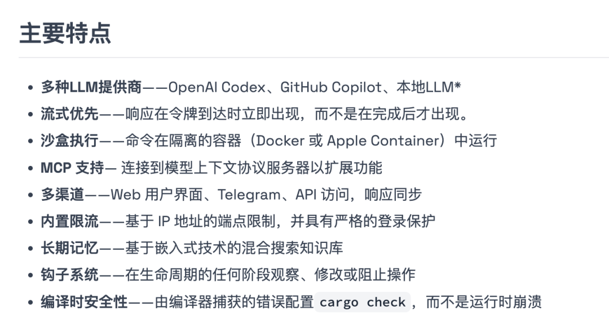

这下 OpenClaw 宇宙 终于集齐了最后一块拼图！（当然也许不是最后一块）
我们见证了 Node.js 版的 OpenClaw（生态丰富但臃肿），Python 版的 Nanobot（易于魔改），Go 版的 PicoClaw（极致轻量 IoT），现在终于迎来了 Rust 版的 Moltis。

它彻底抛弃了 Node.js 的 node_modules 黑洞，也没有 Python 的环境依赖地狱。一个静态二进制文件，下载即运行。
Moltis 的出现，不仅仅是换了种语言重写，还具备以下特性：
• 零依赖： 没有 Node.js，没有 Python 环境，只有一个静态编译的二进制文件。 • 全沙箱： 所有的 AI 操作都在 Docker 或 Apple Container 中会话级隔离。 • 反泄露： 连环境变量里的 Base64 密钥都能自动识别并脱敏。

它用 Rust 的强悍性能和安全性，给 AI Agent 这一物种立下了新的标杆。
一、最大的改变：单文件 Rust 架构
moltis 采用 Rust 构建，带来三个直接好处：
1、单个静态二进制文件
无需：
• Node.js • npm • 全套 JS 运行时
下载即用。
2、更强的内存与并发安全
Rust 本身：
• 无 GC 抖动 • 强类型约束 • 更稳定的并发
对长期运行的 Agent 系统非常重要。
3、更适合生产环境部署
单文件意味着：
• CI/CD 更简单 • 容器更轻量 • 运维更可控
这点对于真正想“落地 Agent”的团队很关键。
二、统一接口
moltis 做了一个很聪明的设计：统一模型接口层。
支持接入：
• OpenAI Codex • GitHub Copilot • 本地 LLM（可离线）
而且支持：故障转移链（Failover Chain）
如果主模型超时、限流、API 失败，会自动切换备用模型。
这点非常企业级。
很多 Agent 项目一旦 API 崩溃就直接卡死，moltis 明显是往「高可用架构」方向设计的。
三、本地模型优先，完全离线运行
moltis 内置本地模型支持：
• 自动下载模型 • 自动配置 • 零手动干预
并且可以完全离线运行。
这意味着：
• 内网部署 • 数据不出本地 • 不依赖外部 API • 高安全场景可用
对于金融、企业内网、政府项目，这点是核心竞争力。
四、安全机制
1、会话级沙箱隔离
所有命令执行：
• 在 Docker 或 Apple Container 中运行 • 会话级隔离 • 每次调用独立环境
也就是说 Agent 不能随便污染宿主系统。
2、环境变量自动脱敏
这是个很细节但很重要的设计。
它会自动识别并脱敏：
• 明文环境变量 • Base64 编码 • Hex 编码
避免：
• Token 被模型读到 • API Key 泄漏 • 意外输出到日志
很多 Agent 项目根本没考虑到这一层。
3、首次运行生成设置码
首次运行终端打印唯一设置码，无默认密码。
杜绝：
• 默认 admin/admin • 默认 root 账号
这一点是有安全工程思维的设计。
五、存储架构
即：SQLite + 向量搜索 + 全文检索
moltis 使用基于 SQLite 的混合存储架构。
包含：
• 向量语义搜索 • 全文检索 • 文件监听实时同步
可实现对话可语义召回、本地文档可索引、实时感知文件变化。
而且当上下文窗口达到 95% 时自动压缩精简
很多 Agent 一旦上下文爆了就崩溃，moltis 做了自动压缩策略。
这点非常实用。
六、安装使用
不需要安装 Rust 环境。直接去 GitHub Release 页面下载对应你系统的二进制文件。
或者在你的电脑或服务器上直接执行：
# Install
curl -fsSL https://www.moltis.org/install.sh | sh
# Run
moltis在浏览器中打开显示的网址（例如，http://localhost:13131），添加您的 LLM API 密钥就能开始聊天！
tips: 仅当从非本地主机地址访问 Moltis 时才需要身份验证。在本地主机上，您可以立即开始使用。
7、写在最后
如果说 OpenClaw 是：AI Agent 的 Node.js 实验场
那 moltis 更像是：面向生产环境的 Rust 版本进化。
单文件、零依赖、沙箱隔离、本地优先、安全增强。
这不是「炫技项目」，而是「认真想进企业环境」的 Agent 框架。
GitHub：
https://github.com/moltis-org/moltis

如果本文对您有帮助，也请帮忙点个 赞👍 + 在看 哈！❤️